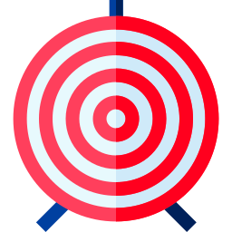

<div class="row" style="margin-top: 1em;">
    <div class="jumbotron responsive-img" data-aos="fade-left" data-aos-duration="500">
        <div class="card transparent" style="height: 90vh;">
            <div class="col s8 m6 l3" data-aos="fade-down-left" data-aos-duration="500" data-aos-delay="200">
                <div class="card-title white-text text-darken-4" style="transform: translate(0px,250px);
                    background-color: rgba(36, 36, 36, 0.767);">
                    <h2 data-aos="fade-down-right" data-aos-delay="400" style="padding: 10px;"> Serba <br> Kopi</h2>
                </div>
            </div>
        </div>
    </div>
</div>

<!-- Manfaat minum kopi -->
<h4> Manfaat minum kopi</h4>
<div class="row" style="text-align: center">

    <div class="col s12 m4 l4" style="padding: 1em;" data-aos="fade-left">
        
        <p>Meningkatkan fokus </p>
    </div>
    <div class="col s12 m4 l4" style="padding: 1em;" data-aos="fade-left" data-aos-delay="200">
        
        <p> Mempertajam daya ingat </p>
    </div>
    <div class="col s12 m4 l4" style="padding: 1em;" data-aos="fade-left" data-aos-delay="400">
        
        <p>Menurunkan risiko penyakit otak dan saraf </p>
    </div>
</div>